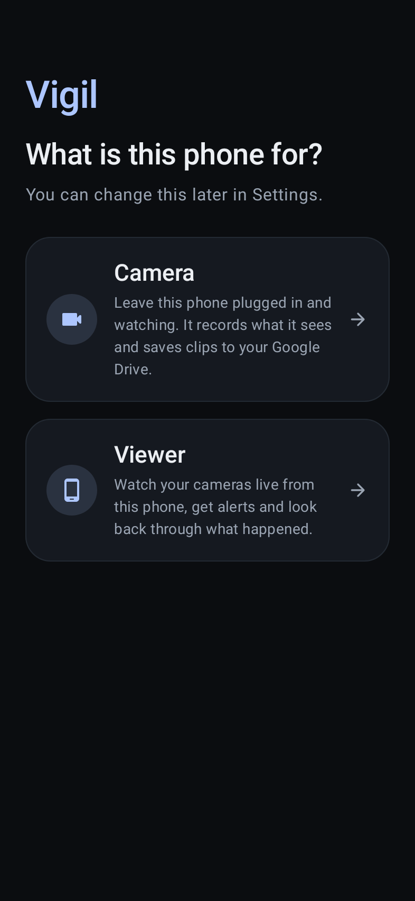
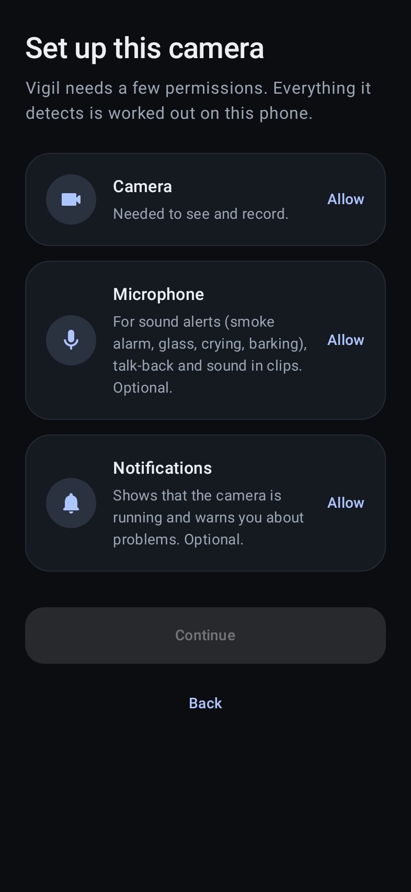
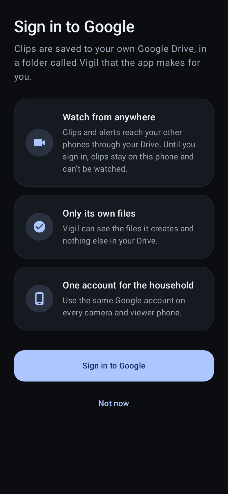
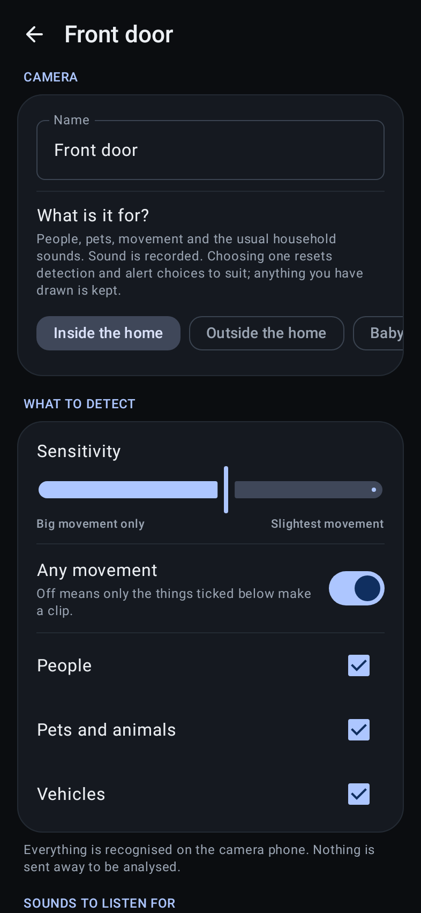
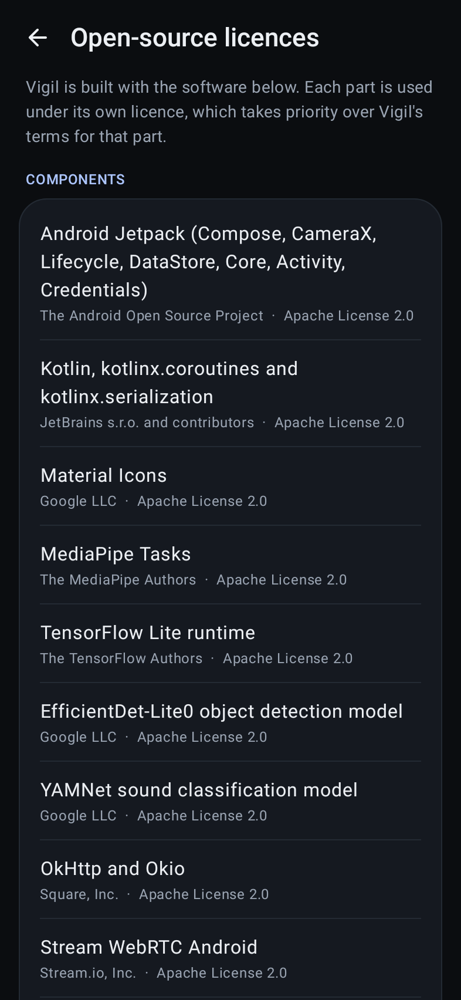

A spare phone becomes a security camera
Vigil turns a phone you no longer use into a camera for your home, your pets or your site cabin. It spots people, vehicles and important sounds, and saves what it sees to your own Google Drive.
Watch live and get alerts on a second phone, or in a web browser if you only have the one.
Recording people is covered by the law. What the law says
- Version 1.2
- Android 10 or later
- 67 MB
Free, with nothing to unlock. No adverts, no account with the developer, no tracking. Compare or read the release notes.
Chrome may say the file might be harmful. It shows this for app files that do not come from Google Play. Choose Download anyway.

- No subscriptionEvery feature is in the free app.
- No advertsNone in the app and none on this site.
- Your own Google DriveClips are ordinary video files in a folder you own.
- Worked out on the phoneNothing is uploaded to be analysed.
A look inside
These are the real screens, drawn from the app's own code. The camera and live views need a real camera, so they are not shown. Swipe or scroll sideways to see them all.




How it works
There is no hub to buy and no monthly fee. The spare phone does the watching and your own Google Drive does the storing.
Stand a spare phone somewhere
Plug it in, open Vigil, choose Camera and press Start watching. The screen goes dark and the camera carries on.
It records what matters
When something happens, Vigil saves a clip that starts five seconds before the event and runs until things go quiet.
You see it wherever you are
Clips arrive in your Google Drive. On a second phone, or in a browser, you can watch live, get alerts and look back through the day.
Everything is in, and all of it is free
Nothing below is held back for a paid tier, because there is no paid tier.
Watching
- What it sees and hears
- People, pets, vehicles and any movement; smoke alarms, breaking glass, a baby crying, a dog barking and shouting.
- Clips that start before the event
- Five seconds of lead-in, so you see the person walk in.
- Zones and tripwires
- Watch only the area that matters, and be told when someone crosses a line.
- Night and low light
- A brighter picture as it gets dark, a night mode, and the torch on detection.
- Up to four cameras
- Each with its own name and settings, shown together on one screen.
Answering back
- Live view and talk-back
- A direct, encrypted link between your phones. Hold to talk or open a two-way call.
- Deterrents
- A siren, a flashing torch and a spoken warning, by hand or on detection.
- Alerts with a picture
- See what set the camera off before you open the app.
- Widget and quick tile
- Arm or disarm from your home screen or the pull-down panel.
Looking back
- The day on one line
- A 24-hour timeline marked by what was seen.
- The day in a minute
- A one-minute time-lapse of each day.
- Web viewer
- Watch live, play recordings and arm or disarm from any modern browser.
- A rolling recording
- A non-stop recording kept on the camera phone itself, if you want one.
Privacy and care
- Privacy masks
- Black out a neighbour's window or the pavement so it is never recorded.
- Sound is your choice
- Decide for each camera whether sound is recorded.
- Roles for each phone
- Full control or view only, for a child's or a relative's phone.
- Looking after itself
- Tamper and health alerts, restarts after a power cut, and Wi-Fi only uploads.
Your home is your business
Your Drive, not ours
Clips go to a folder in your own Google Drive. Vigil can see only the files it creates.
Worked out on the phone
People, pets, vehicles and sounds are recognised on the camera phone.
No ads, no tracking
There is no advertising, analytics or tracking, in the app or on this site.
Use it within the law
Vigil records pictures, and sound if you switch it on. Where you point a camera, and what you do with the recordings, is your responsibility.
- UK GDPR and the Data Protection Act 2018. If a camera covers anything beyond your own boundary, such as a pavement, a shared path or a neighbour's property, data protection law is likely to apply to you. The Information Commissioner's Office has guidance for home CCTV at ico.org.uk.
- Protection from Harassment Act 1997. Using a camera to watch or follow someone can be harassment.
- Sexual Offences Act 2003, section 67 (voyeurism). Recording people in places where they expect privacy, such as a bathroom or bedroom, is a crime.
- At work. Recording staff or the public means meeting the duties an organisation has under data protection law, including clear signs.
Laws differ in other countries. If you are not in the UK, the rules where you are apply. Read the terms of use.
Installing and updating
Vigil is not on Google Play, so your phone asks a couple of extra questions the first time.
Download the app file
Tap Download on your phone. The file is called Vigil.apk and is about 67 MB. If Chrome says the file might be harmful, choose Download anyway. First tick the box to say you will use the app within the law.
Allow the install
Open the file. The first time, Android asks you to allow your browser to install apps. Allow it, go back and tap Install. If Google Play Protect steps in, choose More details, then Install anyway.
Updating later
Vigil tells you when a newer version is out. Install the new file over the old one and everything you have saved is kept.
Version 1.2, released 15 November 2026. See the release notes, or check your download.
Questions
Is Vigil really free?
Yes. There is no paid version, no subscription and no adverts, and nothing in the app is locked.
Is Vigil on Google Play?
No. Vigil is a personal project and is downloaded from this site as an Android app file. It needs Android 10 or later.
Do I need two phones?
No. One spare phone can work as a camera on its own: it saves clips to your Google Drive, and you can watch live, play recordings and arm or disarm from the web viewer in a browser. A second phone adds alerts that arrive with the app closed, and talk-back.
Can the rest of the household use it?
Yes. Everyone signs Vigil in to the same Google account, ideally a spare one made just for the cameras, and each phone is set to full control or view only. Google's narrow Drive permission does not let Vigil share a camera with a different Google account.
Where do my recordings go?
Clips are saved as ordinary video files in a folder called Vigil in your own Google Drive, and deleted after 30 days unless you star them. The camera phone can also keep a non-stop recording of its own, which is not sent to Drive. Nothing is sent to the developer.
Can Vigil see everything in my Google Drive?
No. Vigil asks for the narrowest Drive permission Google offers. It can only see the files and folders it has created itself.
Is the video analysed online?
No. Movement, people, pets, vehicles and sounds are all recognised on the camera phone. Nothing is uploaded to be analysed.
How do I update Vigil?
Vigil tells you when a newer version is out. Download it from this site and install it over the one you have. Your cameras and settings are kept.
Do I have to tell people they are being recorded?
You are responsible for using a camera lawfully. In the UK, a camera that only covers your own home and garden is generally fine, but filming beyond your boundary, or at a workplace, brings data protection duties. Vigil includes privacy masks and a printable sign to help. See the terms of use.
Keep an eye on things, for nothing
Free, with no adverts and nothing to unlock. Made by the developer of several other free Android apps: see them all.